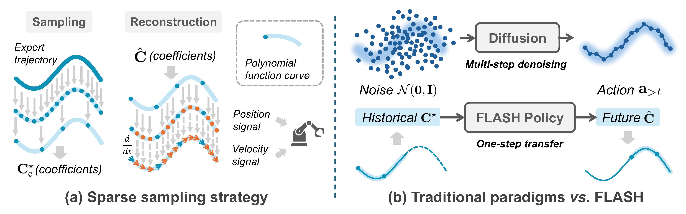
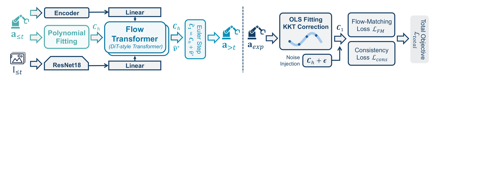
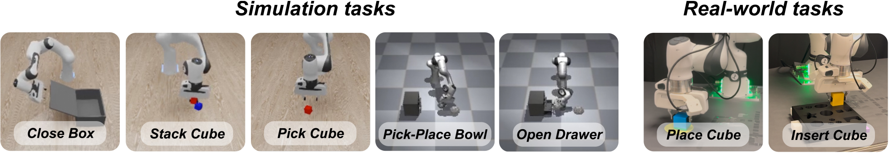
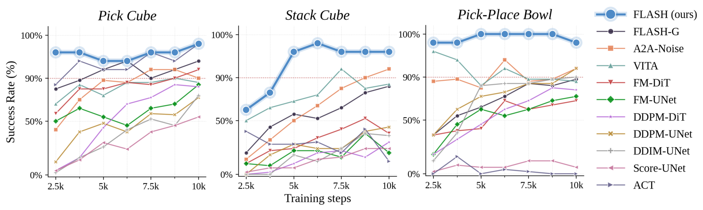
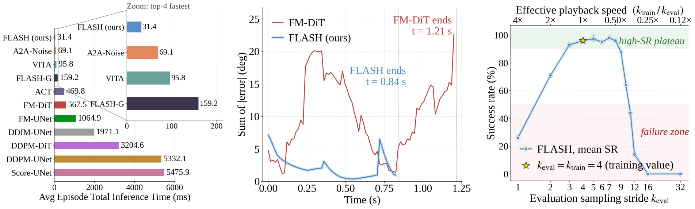
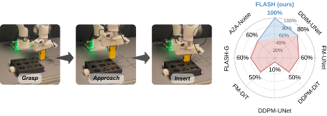
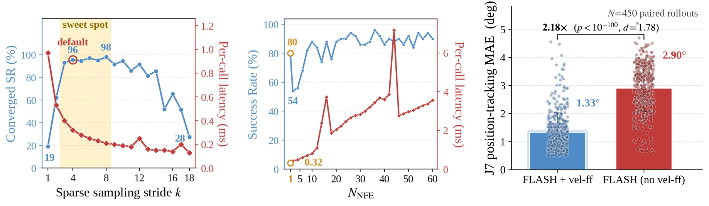

A Fast Legendre-polynomial Action policy via Sparse History-anchored flow
MARS Lab, Nanyang Technological University, Singapore
Generative models such as diffusion and flow matching have become dominant paradigms for visuomotor policy learning, yet their reliance on iterative denoising incurs high inference latency incompatible with real-time robotic control. We present a Fast Legendre-polynomial Action policy via Sparse History-anchored flow (FLASH), which replaces discrete action-chunk generation with continuous Legendre polynomial trajectory representation. Specifically, by fitting expert demonstrations under sparse temporal sampling, FLASH enables a single inference to cover a significantly extended action horizon. To further accelerate generation, FLASH initiates the flow matching process from history polynomial coefficients rather than uninformative Gaussian noise, shortening the transport distance and enabling accurate single-step inference. Moreover, analytic polynomial differentiation directly provides desired velocity feed-forward signals to the torque controller without numerical approximation. Extensive experiments on five simulated and two real-world manipulation tasks demonstrate that FLASH achieves state-of-the-art success rates (≥ 92% across all tasks), a per-episode inference time of 31.40 ms (up to 175× faster than diffusion policies and 18× faster than prior flow matching policies), up to 4× faster training convergence than ACT, and 5× to 7× reduction in controller tracking error compared to discrete-action baselines.
Robot motions are inherently smooth and low-frequency — a short Legendre polynomial can represent many discrete action points with just a handful of coefficients. FLASH builds on this observation in two ways:


We evaluate FLASH on a Franka robot across seven manipulation tasks: five simulated tasks on the Roboverse platform — Close Box, Pick Cube, Stack Cube, Open Drawer, Pick-Place Bowl — and two real-world tasks Place Cube and Insert Cube with millimetre-level insertion tolerance.

Success rates (%) on five simulated tasks at a shared training budget of 10k optimiser steps. NFE denotes the number of generator function sampling steps at inference. Bold = best, underline = second best. Each entry is averaged over 50 independent rollouts.
| Method | NFE | Close Box | Pick Cube | Stack Cube | Open Drawer | Pick-Place Bowl |
|---|---|---|---|---|---|---|
| Score-UNet | 100 | 44 | 58 | 24 | 2 | 8 |
| DDPM-UNet | 100 | 84 | 68 | 44 | 76 | 90 |
| DDIM-UNet | 40 | 80 | 74 | 42 | 76 | 92 |
| DDPM-DiT | 100 | 68 | 78 | 36 | 50 | 76 |
| FM-DiT | 10 | 70 | 92 | 46 | 36 | 68 |
| FM-UNet | 10 | 78 | 82 | 30 | 70 | 76 |
| ACT | 1 | 70 | 98 | 20 | 80 | 0 |
| VITA | 6 | 94 | 86 | 86 | 68 | 86 |
| A2A-Noise | 1 | 98 | 90 | 92 | 88 | 92 |
| FLASH-G | 10 | 70 | 94 | 82 | 62 | 88 |
| FLASH (ours) | 1 | 100 | 98 | 96 | 92 | 98 |
With single-step inference (NFE = 1), FLASH achieves ≥ 92% success on every task, beating the homologous FLASH-G (which differs only by starting from Gaussian noise) by 17.6 pp on average — isolating the contribution of the history-anchored flow mechanism — and the strongest single-step baseline A2A-Noise by 4.8 pp on average.
Beyond a higher performance ceiling, FLASH exhibits significantly faster convergence. On Pick Cube, FLASH reaches 96% success in just 2,500 steps — about 4× faster than ACT, the strongest baseline. On Stack Cube, FLASH is 30 percentage points above the next-best policy at 6,250 steps. On Pick-Place Bowl, FLASH stabilises at 100% success after 5,000 steps.

All policies are run on the same machine (NVIDIA RTX 5090). FLASH finishes a successful episode in 31.4 ms on average: 175× faster than Score-UNet (5,476 ms), 5.1× faster than the homologous FLASH-G (159 ms, sparse sampling but noise-initialised), and 2.2× faster than the strongest baseline A2A-Noise (69 ms).

The polynomial parameterisation gives the low-level controller an analytic velocity feed-forward signal and a natively high-frequency output. On the real-world Insert Cube task — with millimetre-level tolerance — FLASH attains 100% success, leading seven baselines by an average of 47 pp. Across five real-world rollouts, FLASH's joint tracking MAE is 0.274 ± 0.004°, compared with 0.460 ± 0.028° for FM-DiT.


@article{flash2026,
title = {FLASH: Efficient Visuomotor Policy via Sparse Sampling},
author = {Bai, Jiaqi and Jia, Jindou and Hu, Yuxuan and Li, Gen and
Chen, Xiangyu and An, Tuo and Zuo, Kuangji and Yang, Jianfei},
year = {2026},
}